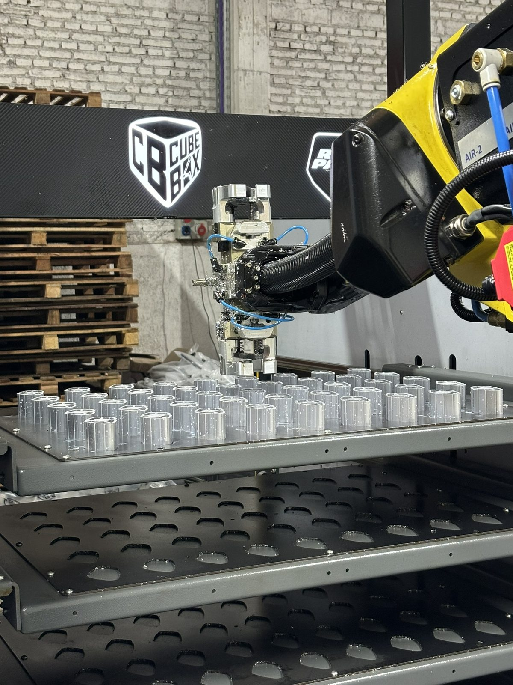
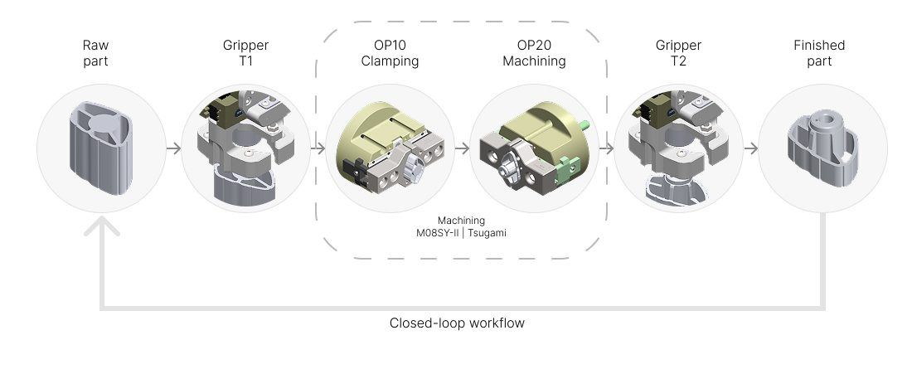
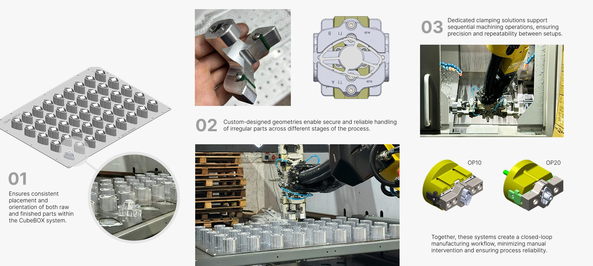

Proyecto 07 · Tezmaksan · Producción automatizadaProject 07 · Tezmaksan · Automated production
Herramental CubeBOXCubeBOX tooling
Herramental a medida para una celda CubeBOX de producción automatizada, donde un robot alimenta tornos CNC. Las piezas se cargan, se mecanizan y vuelven a su posición original sin intervención manual, con posicionamiento constante y resultados repetibles.
Custom tooling for a CubeBOX automated production cell, where a robot feeds CNC lathes. Parts are loaded, machined and returned to their original position with no manual intervention, ensuring consistent positioning and repeatable results.
Un circuito cerradoA closed loop
La celda integra la manipulación robotizada con el torneado CNC. El robot toma la pieza en bruto del pallet, la sujeta para la primera operación, la gira para la segunda y devuelve la pieza terminada a su lugar.
The cell integrates robotic handling with CNC turning. The robot picks the raw part from the pallet, clamps it for the first operation, flips it for the second and returns the finished part to its place.

Tres sistemas de herramentalThree tooling systems
Desarrollé tres sistemas para que el mecanizado funcione sin intervención: un pallet que asegura la posición y orientación de las piezas en bruto y terminadas, pinzas con geometrías propias para tomar piezas irregulares de forma segura, y sujeciones dedicadas para las dos operaciones de mecanizado.
I developed three systems so machining runs unattended: a pallet that keeps raw and finished parts in a consistent position and orientation, grippers with custom geometry to handle irregular parts securely, and dedicated workholding for the two machining operations.

Repetible en cada cicloRepeatable every cycle
El diseño apuntó a un posicionamiento preciso, repetible y estable en todas las etapas del proceso. La geometría y las interfaces se ajustaron según los requisitos de mecanizado, las tolerancias de la pieza y una manipulación robotizada confiable.
Design focused on precise, repeatable and stable positioning at every stage. Geometry and interfaces were refined around machining requirements, part tolerances and reliable robotic handling.